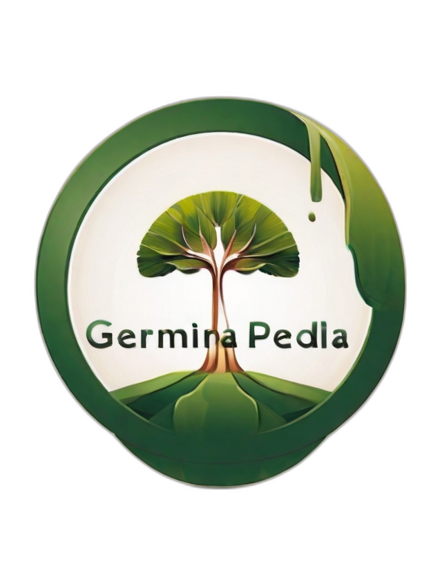

<!DOCTYPE html>
<html lang="en">
<head>
    <meta charset="UTF-8">
    <meta name="viewport" content="width=device-width, initial-scale=1.0">
    <title>ODS 11 - Sustentabilidade</title>
    <link rel="stylesheet" href="Estilo.css">
</head>
<body>
    
</body>
</html>

    <p><br><br><br><h1 style="margin-left:40%; margin-right: 40%;">Germina Pedia: Sustentabilidade</h1></p>
    <br><br>
    <hr>
    <H1>Indice:</H1>
    Sustentabilidade
    <br>Tipos de sustentabilidades:
    <ul>
        <li></li>
        <li></li>
        <li></li>
        <li></li>
        <li></li>
        <li></li>
    </ul>

    <br><br>

    <h1>O que é sustentabilidade?</h1>
    <hr>
    <p>Sustentabilidade é a capacidade de utilizar conscientemente os recursos naturais sem comprometer o bem-estar das gerações futuras. O seu principal objetivo é encontrar um equilíbrio entre o desenvolvimento económico e a proteção ambiental. Para alcançar a sustentabilidade, é crucial considerar dois fatores básicos. Primeiro, todas as partes interessadas devem sentir-se incluídas, promovendo a participação e a equidade. Em segundo lugar, os recursos naturais são limitados e precisam de ser utilizados de forma sensata e responsável. </p>
    <hr>
    <br><br>
    <h2>Sustentabilidade social</h2>
    <hr>
    <p> É a distribuição de renda com redução das diferenças sociais, principalmente para a população de baixa renda, e melhoria da qualidade de vida de toda a população.
        <br><br>
    </p>
    <hr>
    <br><br>
    <h2>Sustentabilidade Cultural</h2>
    <hr>
    <br><br>
    <p>Aponta para uma nova abordagem interdisciplinar, dedicada a aumentar o significado da cultura e a importância das suas características tangíveis e intangíveis nos campos locais, regionais e globais do desenvolvimento sustentável.</p>
    <br
    <hr>
    <br><br>

    <h2>Sustentabilidade Ambiental</h2>

   


